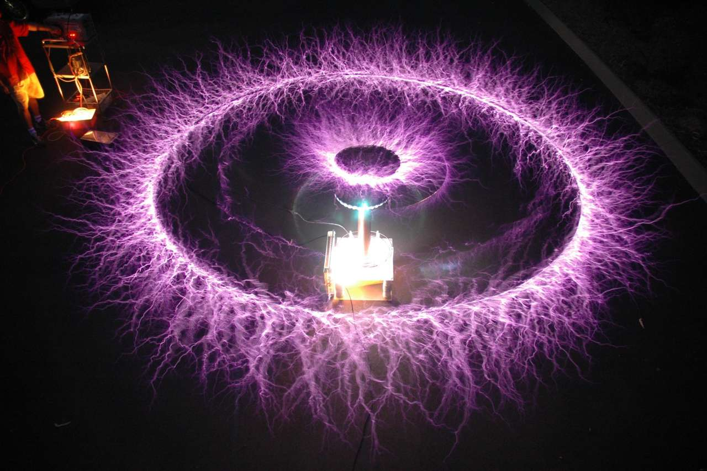
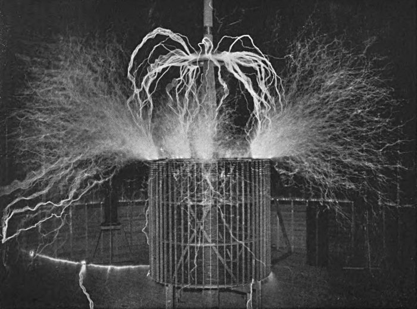
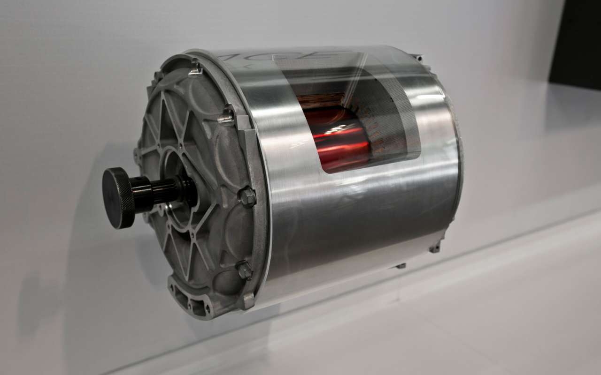
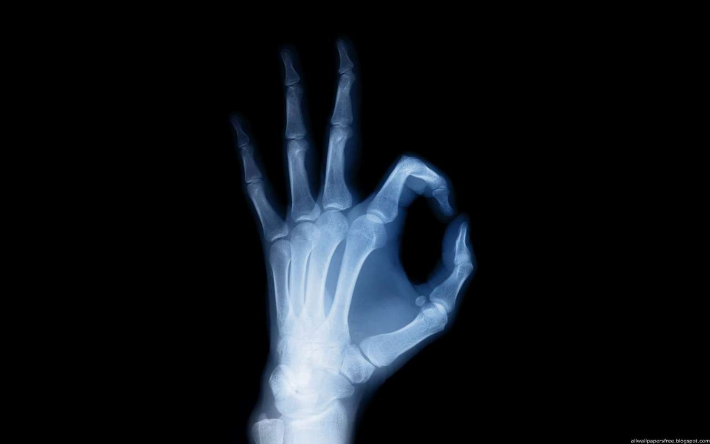
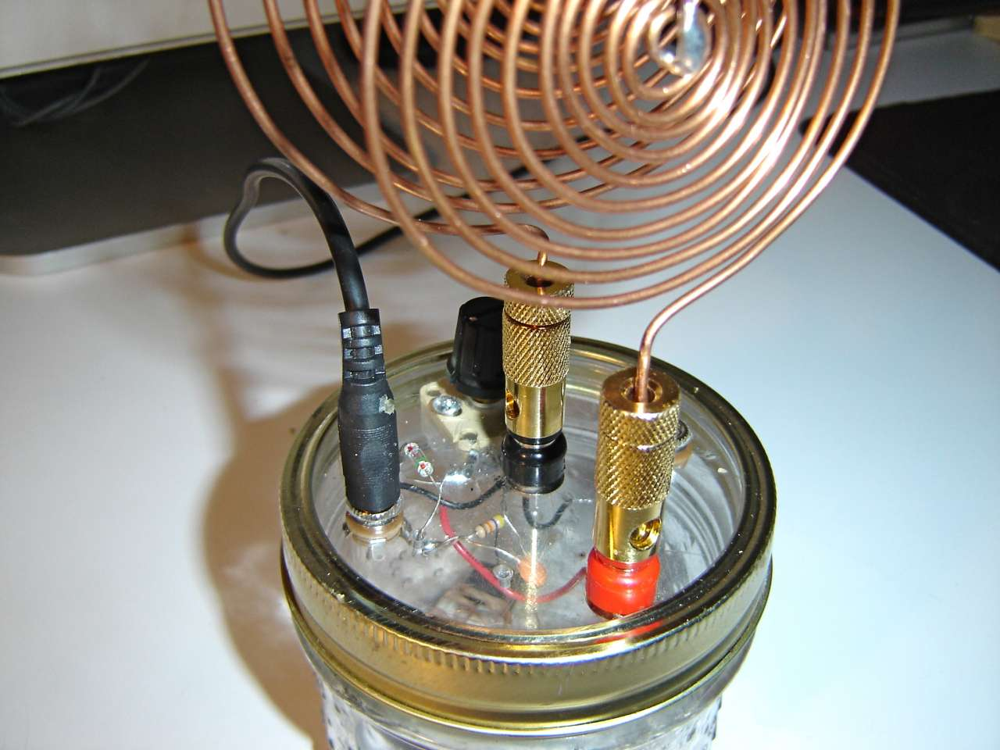

Гигорчук Данііл Дмитрович
Видатні вітчизняні та закордонні вчені-фізики.

Нікола Тесла

Нікола Тесла (1856-1943) – винахідник в області електротехніки і радіотехніки сербського походження. Ніколу називають батьком сучасної електрики. Він зробив безліч відкриттів, і винаходів отримавши більше 300 патентів на свої творіння в усіх країнах, де працював. Нікола Тесла був не тільки фізиком теоретиком, але і блискучим інженером. Тесла відкрив змінний струм, бездротову передачу енергії, електрику, його роботи привели до відкриття рентгена, створив машину, яка викликала коливання поверхні землі. Нікола передбачав настання ери роботів, здатних виконувати будь-яку роботу. Він відкрив явище обертового магнітного поля, на основі якого побудував електричні генератори З 1889 року приступив до досліджень струмів високої частоти і високої напруги У 1891 році на публічній лекції Тесла описав і продемонстрував принципи радіозв’язку. У 1893 році впритул зайнявся питаннями бездротового зв’язку і винайшов щоглових антену.
Світло

Зрозуміло, що Тесла не винайшов саме світло, але він відкрив спосіб його збереження та передачі. Він розробив і використовував флуоресцентні лампи у своїй лабораторії за 40 років до того, як їх «відкрила» промисловість. На Всесвітній виставці Тесла взяв скляні трубки і зігнув їх у формі імен знаменитих вчених - фактично, вперше в світі створивши неонову рекламу. Але, мабуть, найбільш відомим та суперечливим його винаходом у цій сфері стали знамениті «котушки Тесли». Цілком очікувано, що саме вони стали тим винаходом, що велика промисловість не визнавала, а саме ідею, що Земля сама по собі є величезним магнітом, здатним генерувати електрику, використовуючи частоти в якості передавача, і все що вам потрібно на іншому кінці, щоб нею скористатися - це приймач, як у випадку радіо
Змінний струм

Цей винахід наробив великий переполох на Всесвітній виставці у Чикаго в 1893 році. Він поклав початок непримиренної війни між поглядами Едісона та Тесли на те, як має проводитися і поширюватися електрика. Причому цей поділ можна описати в термінах вартості та безпеки: постійний струм, ідею якого підтримував Едісон (і компанія General Electric) був дорогий для передачі на великі відстані і виробляв небезпечні розряди на конвертері (комутаторі). В результаті, Едісон подарував світу електричний стілець, одночасно звівши нанівець спроби Тесли дати світові більш безпечну і дешеву альтернативу. Відповіддю Тесли на це стали його знамениті демонстрації повної безпеки електрики, коли він пропускав струм через своє власне тіло, щоб запалювати електричні лампи. Це протистояння Едісона і Тесли (а також компаній GE і Westinghouse) у 1893 році стало кульмінацією більш ніж десятирічної історії темних оборудок, вкрадених ідей і патентних махінацій для придушення винаходів Тесли. Але, тим не менш, саме винахід Тесли, зрештою, став використовуватися для генерації та постачання електрики в наші будинки.
Електричний двигун

Винайдення Теслою електричного двигуна було популяризоване знаменитим електромобілем, який отримав його ім'я. Не заглиблюючись в технічні деталі, які виходять далеко за рамки цієї статті, досить сказати, що винайдений Теслою двигун, який працює в обертових магнітних полях, міг би дуже швидко звільнити людство від влади Великої нафти. Але, на жаль, в 1930 році цей винахід став жертвою економічної кризи. Однак він назавжди змінив наш світ, і сьогодні ми це приймаємо за належне: промислові вентилятори, домашня електроніка, водяні насоси, електричні інструменти, дискові накопичувачі, електронні годинники, компресори та багато іншого.
Рентгенівські промені

Електромагнітне та іонізуюче випромінювання пильно вивчали в пізніх 1800-х роках, але Тесла досліджував всю гамму. Все, від предтечі Кірліанівської фотографії, яка має здатність запам'ятовувати життєву силу, до випромінювань, які ми нині використовуємо в медичній діагностиці - все це є трансформаціями винаходу, в якому Тесла зіграв ключову роль. Рентгенівські промені, як і багато іншіх відкриттів Тесли, відбулися завдяки його переконанням, що все, що нам необхідно, щоб зрозуміти всесвіт - завжди знаходиться навколо нас, і ми лише повинні використовувати свій розум, щоб розробити пристрої, здатні підсилити наше внутрішнє сприйняття реальності.
Радіо

Хоча автором цього винаходу спочатку вважався Гільєрмо Марконі, і більшість людей вважають його таким і понині, Верховний Суд США скасував патент Марконі від 1943 року, коли отримав докази того, що Тесла винайшов радіо за багато років до нього. Тесла продемонстрував, що радіосигнали - це всього лише ще одна частота хвиль, яка вимагає для себе передавач та приймач. Він провів презентацію цієї технології перед Національною асоціацією електричного світла. І хоча Тесла отримав два патенти на свій винахід - US 645576 і US 649621 - в 1897 році, в 1904 році Патентне бюро США скасував своє рішення, вручивши патент на винахід радіо Марконі. Багато хто вважає, що таке рішення було пов'язане з тим, що фінансовими компаньйонами Марконі були Томас Едісон і Ендрю Карнегі, а ці люди мали достатньо підстав і влади, щоб вплинути на рішення патентної комісії. Це також дозволяло уряду США (серед інших) уникнути виплат патентних відрахувань, права на які заявляв Тесла.